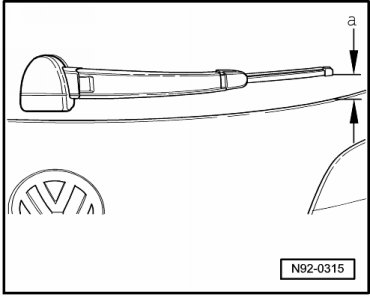

Rear Window Wiper Blade Park Position, Adjusting
Rear Window Wiper Blade Park Position, Adjusting
Special tools, testers and auxiliary items required
• Torque Wrench (V.A.G 1331/)
- Let wiper run to rest position.
The distance - a - between wiper blade and lower edge of windshield must be 55 mm.

- If necessary, adjust the park position by repositioning the wiper arm.
- Tighten the nut - 1 - to the specification given in the assembly overview --> [ Rear Window Wiper System Assembly Overview ] Rear Window Wiper System Assembly Overview.